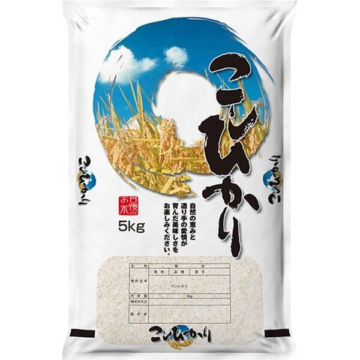
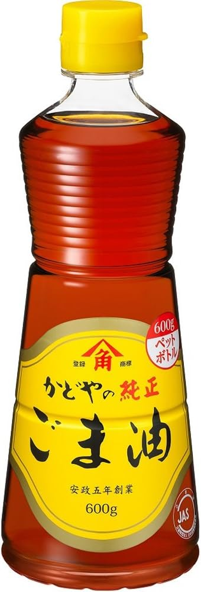
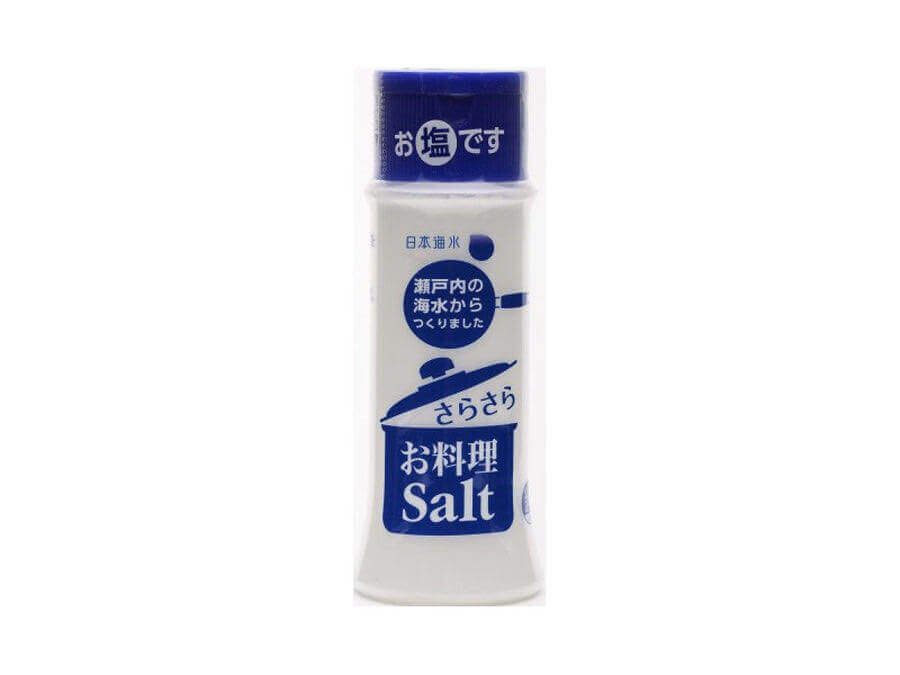
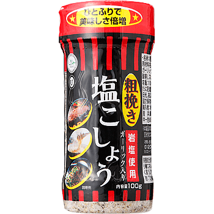
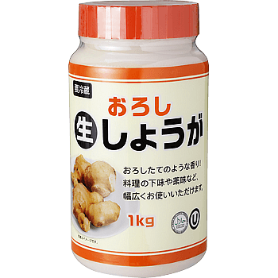

Rice
-
-all Rice 100%
E.G.

-
Perfect for traveller you just need a microwave
or boiled water:
Noodles
-
-All: dry Noodles (not instant or precooked)
with ⚠ Only this ingredients/composition:
Wheat flour or/with buckwheat flour, water, salt.
Noodles with eggs aren't authorized.
- Toa foods Kosher products ⚠ Only with ⓤ

for cooking
-
Yamasa - Soya Sauce Yuki Maru-Daizu Shoyu
(according to the Rabbi)

-
Rice vinegar
-
Mizkan Sushisu Sushi Seasoning (KLBD)
-
Sesame Oil

-

-
Mirin
Mizkan Honteri Mirin / Sweet Seasoning
(KLBD)

-
Tofu- Morinaga: all products with KSA symbol
-Only in USA/outside Japan (KSA)

-
Nori: We recommand to buy nori with Kosher symbol
if it's avaible
Only 100% nori is authorized
But ⚠ You need to be prudent and verify
and check each sheet, check under the light
for micro crayfish or micro crustaceans.
-
Kirkland: You can find nori with Star-K
logo at Costco supermaket (STAR K)

Seasonings
-
Salt (塩)

-
Sugar (日新製)
-
-

-
-
-
-
-
-
-
-

-

-
-
-
-
Drinks
-
Sake: all Junmaishu "純米酒"
E.G.
-
Beer: all pure beers (生ビール)
without flavors/additives are kosher
E.G.

-
Milk: ⚠ chalav nochri only :
100% milk 牛乳/成分無調整 生乳100％
E.G. :

-
Coffee: boss 100% black coffee or
unsweetened 100% coffee
E.G. :

-
Tea: Pure tea 生茶, unsweetened tea:
Barley tea, Green tea...
E.G. :
Adresses
Adresses of store where we can find theses products and kosher products